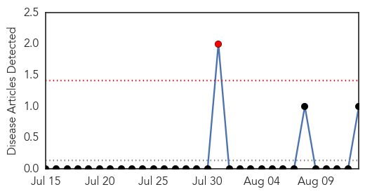
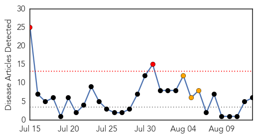

Mumps
30-Day Web Trend
1 alerts, 0 warnings

30-Day Twitter Trend
0 alerts, 0 warnings

Article Locations
Article Confidences

Top Articles:
Top Tweets:
-
No tweets found for Aug 13, 2014
Cholera
30-Day Web Trend
2 alerts, 3 warnings

30-Day Twitter Trend
4 alerts, 0 warnings
Article Locations
Article Confidences
Top Articles:
- 0.998
- Cholera outbreak in Accra declared a pandemic as more die
- 0.955
- Cholera strikes Ghana
- 0.952
- More than 3,000 cholera cases recorded in Accra alone since July
- 0.864
- Ebola, Cholera scare: Ghanaians urged to call Healthline 255 for information
- 0.761
- Research by Disease Control Unit downplays role of filth as cause for cholera outbreak
- 0.608
- South Sudan: “The situation is critical” - South Sudan
Top Tweets:
-
No tweets found for Aug 13, 2014